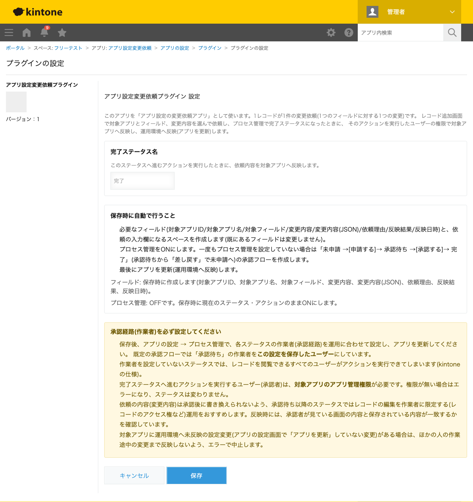
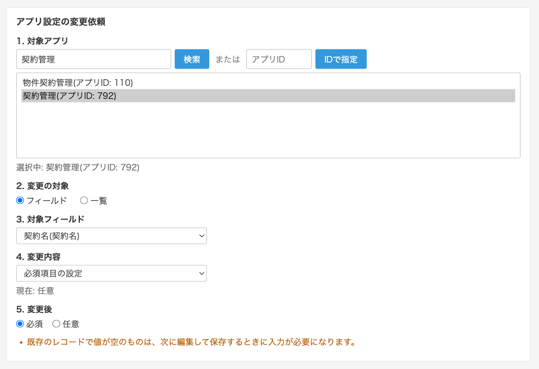
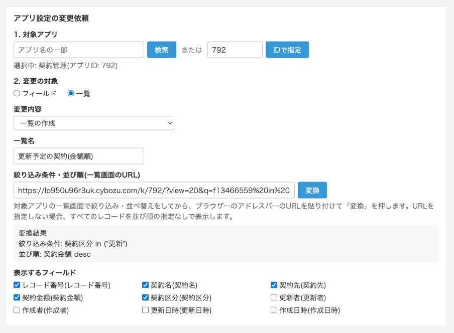
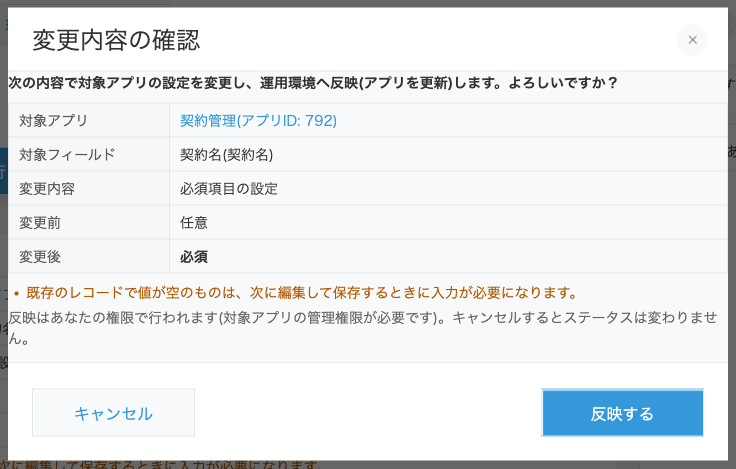
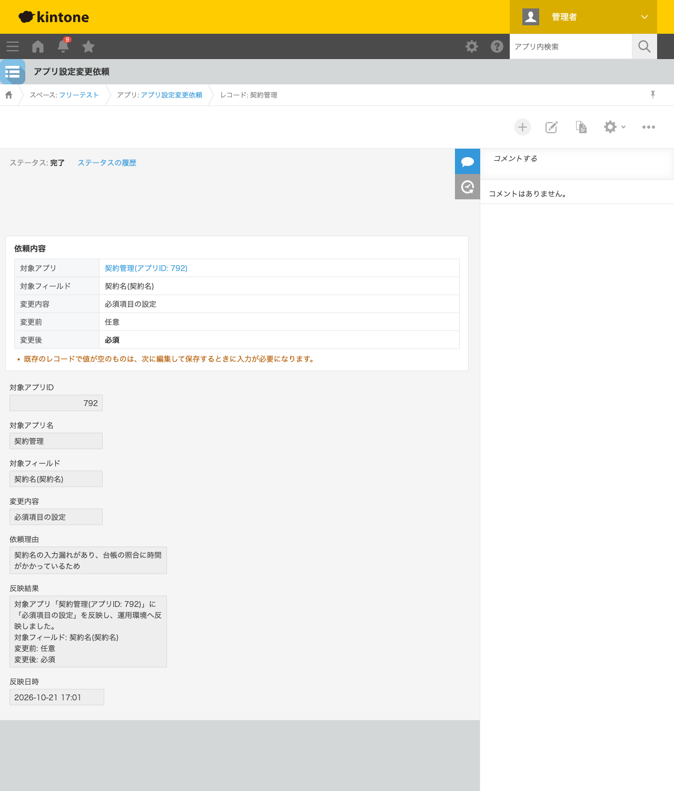
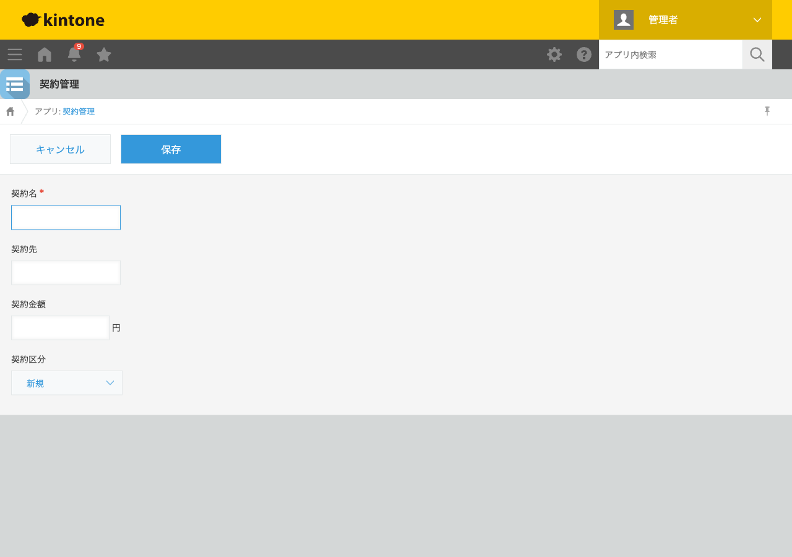
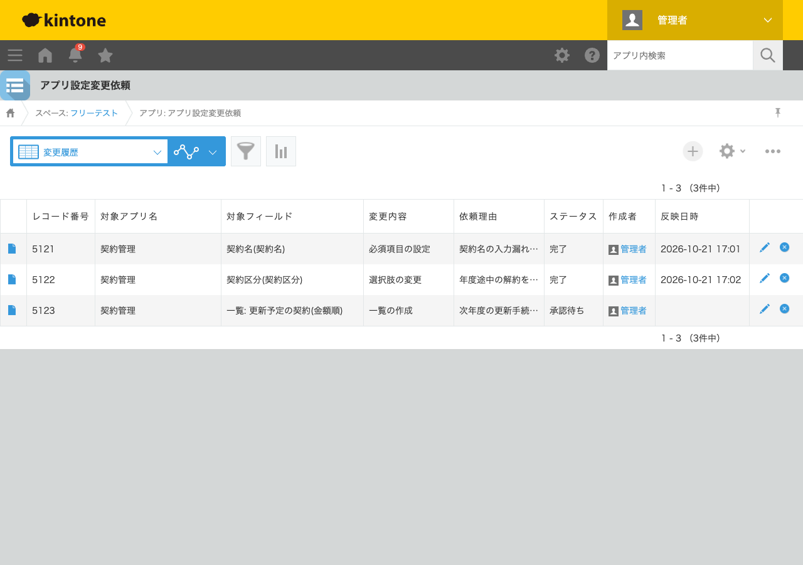

GovAppsプラグイン 安全性を確認できる無料kintoneプラグイン集
kintoneは現場で手軽にアプリを直せるのが魅力ですが、利用が広がるほど 「この項目はいつから必須になったのか」「誰の判断で選択肢を変えたのか」が分からなくなりがちです。 この記事では、アプリの設定変更をレコードで依頼 → 承認 → 自動で反映する流れにして、 アプリ設定の変更履歴を残す方法を、実際に検証環境で依頼・承認した結果つきで解説します。
→ 対応プラグインを見るkintoneでは、アプリ管理権限を持つ人なら誰でも、フィールドの追加・必須化・選択肢の変更・一覧の作成などを その場で行えます。立ち上げ期にはこの手軽さが強みですが、アプリが業務の基幹になってくると、次のような困りごとが出てきます。
解決の方向性は、「設定変更は必ず依頼として記録し、承認されたものだけを反映する」という 変更管理(チェンジマネジメント)の仕組みを、kintoneの中に用意することです。
つまり、標準機能だけでも「依頼と承認の記録」までは作れますが、承認された内容をそのまま確実に反映する部分が手作業になります。 ここをREST APIで自動化するのが、この記事で紹介する方法です。
| 方法 | 向いている場合 | 注意点 |
|---|---|---|
| 依頼アプリ+手作業で反映 | 変更の頻度が少なく、反映作業をアプリ管理者が確実にこなせる場合 | 承認後の設定作業が手作業のため、作業漏れや依頼内容との食い違いが起きうる。反映したかどうかも別途記録が必要 |
| JavaScriptを自作する | 社内に開発者がいて、自社の規程に合わせて作り込みたい場合 | フィールド設定・一覧の変更API、アプリの更新(デプロイ)、権限確認、失敗時の取り消しまでを自前で実装・保守する必要がある。誤った実装はアプリ設定を壊すため、テストの負担が大きい |
| 有料の他社プラグイン・サービス | 予算があり、サポートや多機能さを重視する場合 | 月額・年額の費用がかかる。他のアプリの設定を書き換える強い操作を行うのに、処理の中身(ソースコード)を確認できないことが多い |
| GovAppsプラグイン(アプリ設定変更依頼プラグイン) | 無料で、依頼・承認・自動反映と変更履歴をすぐに始めたい場合 | 変更できる内容は、フィールドの主な設定(名前・コード・必須・重複禁止・初期値・選択肢・文字数/値の範囲・削除)と一覧の作成・修正・削除に限られる(計算式・ルックアップ・アクセス権などは対象外) |
アプリ設定変更依頼プラグインは無料・広告なしで、 ソースコードをGitHubで全公開 しています。他のアプリの設定を書き換えるプラグインだからこそ、処理の中身を誰でも確認できること、 セキュリティレビューのチェックリストを公開していることを重視しています。 主な設計は次のとおりです。
今回は、変更対象のアプリとして「契約管理」(契約名・契約先・契約金額・契約区分)を用意し、 別に「アプリ設定変更依頼」アプリを作ってアプリ設定変更依頼プラグインを追加しました。



依頼者が「申請する」を実行し、承認者が「承認する」を押すと、変更内容の確認ダイアログが表示されます。 「反映する」を押すと、承認者の権限で対象アプリの管理権限を確認したうえで設定を変更し、アプリの更新(運用環境への反映)まで自動で行われます。

反映が終わるとステータスが「完了」になり、依頼レコードに反映結果(変更前・変更後)と反映日時が記録されます。 対象アプリを開くと、「契約名」が必須項目になり、別の依頼で追加した契約区分「解約」も選べるようになっていました。


依頼アプリに「変更履歴」という一覧を作っておくと、アプリ設定の変更履歴(変更管理台帳)として、 どのアプリの・何を・誰の依頼で・なぜ変えたか、承認済みか(ステータス)・いつ反映されたかを一覧で確認できます。 監査で設定変更の経緯を聞かれたときも、この一覧を絞り込んだりCSVに書き出したりして答えられます。 ステータスの履歴から、誰が承認したかも確認できます。

無料プラグイン
アプリ設定変更依頼プラグイン
アプリのフィールド設定・一覧の変更をレコードで依頼・承認し、完了になったときに対象アプリへ自動反映(アプリの更新まで)。依頼レコードがアプリ設定の変更履歴になる
プラグイン詳細を見る →無料プラグイン
決裁者稟議者記録プラグイン
プロセス管理のアクション実行ごとに、実行前後のステータス・実行ユーザー・役職・実行日時をサブテーブルへ自動記録。承認の証跡をレコード内に残したい場合に
プラグイン詳細を見る →